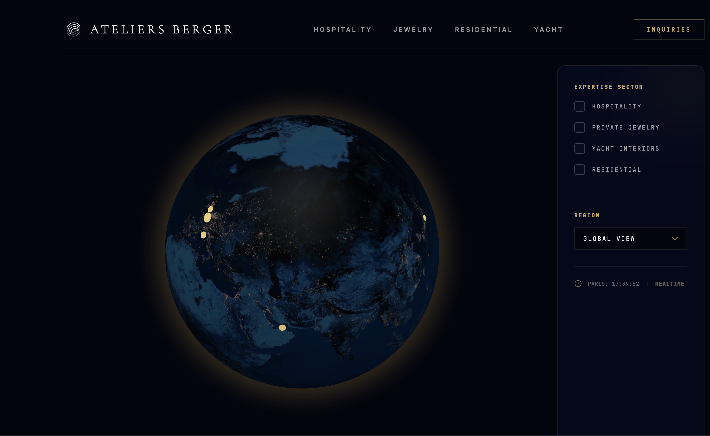

Atelier
Berger
Carte interactive immersive pour explorer les projets de l’Atelier Berger à travers un globe 3D, une liste de réalisations et des fiches détaillées.

Role
Prototype IA, design UI, intégration React, globe 3D, déploiement
Stack
React, TypeScript, Vite, Tailwind CSS, Motion, React Globe GL, Google AI Studio, Vercel
Objectif
Présenter des projets d’architecture de manière immersive et géolocalisée.
Statut
Prototype fonctionnel déployé en ligne.
Le problème
Les portfolios d’architecture présentent souvent les projets sous forme de grilles statiques, ce qui rend difficile la lecture de leur répartition géographique et de leur diversité.
La solution
Atelier Berger Carte Interactive propose une expérience visuelle avec un globe 3D, des points géolocalisés, une liste de projets et des fiches détaillées pour explorer les réalisations de façon plus immersive.
Workflow
Prototype IA
Base du projet générée avec Google AI Studio / Stitch, puis retravaillée manuellement.
Globe 3D
Intégration d’un globe interactif avec React Globe GL, basé sur Three.js et WebGL.
Déploiement
Projet versionné sur GitHub puis mis en ligne avec Vercel.
Fonctionnalités
Projets géolocalisés
Les réalisations sont affichées à partir de coordonnées latitude / longitude.
Navigation interactive
L’utilisateur peut explorer les projets depuis la carte, la liste ou les fiches détaillées.
Animations UI
Transitions et micro-interactions créées avec Motion pour une expérience plus fluide.
Ce que ça montre
Ce projet montre ma capacité à transformer un prototype généré avec l’IA en interface web fonctionnelle : structuration React, composants TypeScript, design responsive, visualisation 3D, gestion de données projets, animations UI et déploiement web.